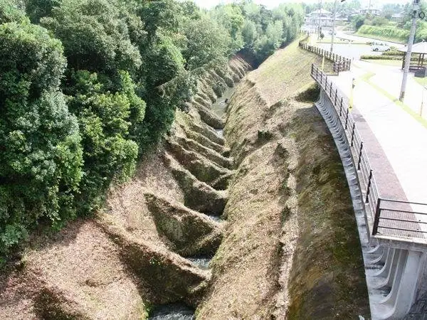
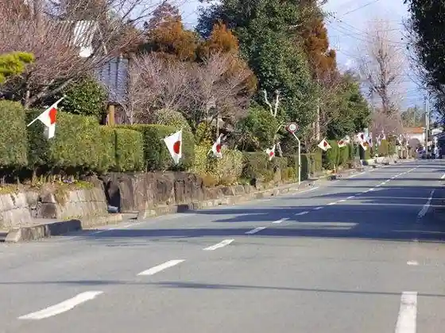
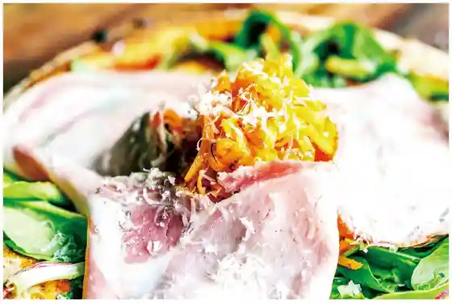
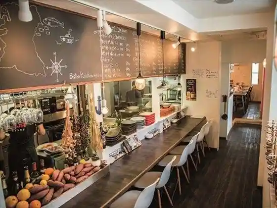

Japan / Kumamoto / Kikuyo
Kikuyo · Kumamoto
Kikuyo
Highlighted on the Kumamoto map.

Kikuyo header on Kumamotoken City Town Village Yoran (Reiwa 7 Nendo Han). Katakana on the header: Kikuyomachi.
Baba Kusui Te no Hana Guri
Kikuyo, Kumamoto · 096-232-4917 · Official / source link
Teppo Koji

Horikawa Pittsua
Kikuyo, Kumamoto · 096-237-6591 · Official / source link

Kissa Abenyu
Kikuyo, Kumamoto · 096-232-2511 · Official / source link
Bisutoro Umi Manmaru
Kikuyo, Kumamoto · 096-288-1635 · Official / source link

Baniku Ryori Senmonten Kyo Hashimoto
Kikuyo, Kumamoto · 096-273-8341 · Official / source link
Mova Villa Haramizu
Kikuyo, Kumamoto · 070-8958-5160 · Official / source link
Mova Villa Okino
Nearby in Kumamoto: ← Kikuchi · Kosa →
Other towns: Amakusa · Arao · Asagiri · Ashikita · Aso · Gyokuto · Hikawa · Hitoyoshi · Itsuki · Kamiamakusa · Kashimamachi · Kikuchi · Kosa · Koshi · Kuma · Kumamoto · Mashiki · Mifune · Minamata · Minamiaso · Minamioguni · Misatomachi · Mizukami · Nagasu · Nagomi · Nankan · Nishihara · Nishiki · Oguni · Ozumachi · Reihoku · Sagara · Takamori · Tamana · Taragi · Tsunagi · Ubuyama · Uki · Uto · Yamae · Yamaga · Yamato · Yatsushiro · Yunomae
All towns in Kumamoto · Back to all prefectures